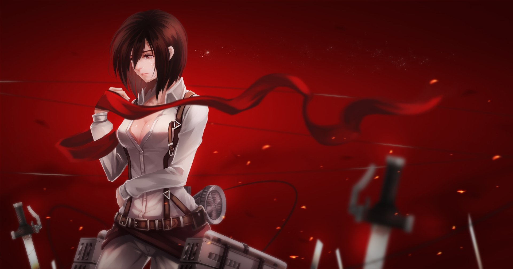

Komi-san
Descripcion de mi post

La diosa KOMI
A red paragrapg
Las Waifus mas del anime
Descripcion de mi post
La diosa KOMI
Descripcion de mi post2

La chica expolicion
Descripcion de mi post2
La guerra mas fuerte Mikasa personaje del anime shingeky no kyogin, situada en la
muralla maria junto a Eren y Armin